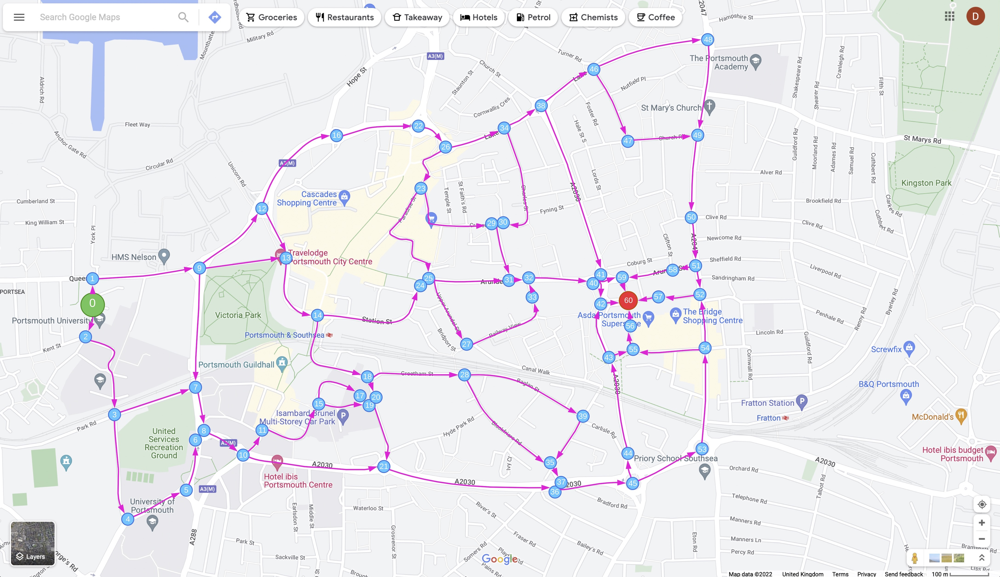

About
This project investigates a way in which a cyclists' journey can be made safer. This approach explores the use of a user customisable algorithm used to navigate the safest route (as perceived by the user). The safety of a road/junction is subjective, and perceived differently by each individual, therefore such a system must respect such preferences.
The main constraints of this project are a fixed start and end point (marked in green and red on the map below), and a fixed, directed decision map. Please consider this is a demonstration, a future version of this system will allow user customisation of all the road/junction properties compared within scenarios 3 and 4. Please navigate to the page 'Demo' to trial the system.
Once satisfied with your trial, please visit the questionnaire below to provide feedback on this demonstration.
Link to Questionnaire Link to Demo
Map of video clip segments (Interactive Map)
Below is a Google My Maps custom map which shows a possible route from the start point and end point of the Portsmouth sample area
Algorithm decision nodes
Directed graph illustrating decision nodes processed by the system
Nodes from directed graph applied to map
